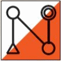

Rasti-Nokia
Aikuisten suunnistuskoulun 2019 palaute osallistujilta
Kyselyyn vastanneita 18 eli n. 60% osallistujista.
Suunnistuskoulun sisältö vastasi odotuksiani
1 - täysin eri mieltä, 5 - täysin samaa mieltä
Voin suositella suunnistuskoulua muillekin
1 - täysin eri mieltä, 5 - täysin samaa mieltä
Pystyn jatkossa suunnistamaan itsekseni vähintään kuntorastien helpon radan
Mihin suunnistuksen osa-alueeseen kaipaisit lisäopetusta?
- Suunnanotto, kompassin käyttö, suunnassa kulku
- Kartan luku, karttamerkit
- Rastin otto
- Eri karttojen läpikäyntiä ja ratojen mallisuorituksia
- Korkeuskäyrien hyödyntäminen
Miten onnistuneita olivat seuraavat osa-alueet
1 - epäonnistunut, 5 - onnistunut, EOS - En osaa sanoa
Olisiko hyödyllistä, jos Nokirasteilla voisi käydä jonkun kanssa rataa läpi ennen ja jälkeen
suorituksen?
Olisitko kiinnostunut osallistumaan suunnistuskoulun jatkokurssille?
Olisitko kiinnostunut osallistumaan suunnistuskoulun jatkokurssille?
Itse aloitin alkeista, joten kaikki tieto oli tarpeellista. Kurssi sopi hyvin aloittelijalle.
Edettiin sopivaa vauhtia eteenpäin.
Asiansa osaavat ja innostuneet ihmiset tätä maailmaa pyörittävät. Hienoa ja hyödyllistä
vapaaehtoistyötä, kiitos siitä!
Loistavat, sanavalmiit, ystävälliset ja lajia kohtaan sopivan intohimoiset ohjaajat!
Koululaisia oli paljon ja monen tasoisia, mutta mielestäni meitä kaikkia kohdeltiin
onnistuneesti omina yksilöinä. :) Mahtava yhteishenki teillä, kiitos kaikille ohjaajille
panostuksesta.
Suunnistuskoulu oli juuri sitä mitä toivoin. Selkeää perustason teoriaa selkeällä
materiaalilla ja hyviä kädestä-pitäen-koulutussessioita metsässä. Kaikki vetäjät olivat oikeasti
kiinnostuneita ihmisten oppimisesta eikä missään vaiheessa tullut tyhmä olo kysellessä. Iso
kiitos kaikille.
Mahtava ohjaajaporukka, kaikilta uskalsi kysyä ja sai vastauksia. Itsellä suurimmat
kompastuskivet korkeuskäyrien hahmotus sekä etäisyyksien arviointi.
Mitä voitaisiin tehdä jatkossa paremmin?
Teorian pöytäharjoituksissa liian nopea tahti.
Enemmän olisi voinut vielä harjoitella/kerrata kartan ja maaston tulkintaa.
Maastoharjoituksissa pienryhmän kanssa olisi voinut ehkä vielä enemmän herätellä
keskustelua ja vaihtaa ajatuksia miten kukakin karttaa/maastoa tulkitsee ja miksi päätyy
mihinkin reittivalintaan.
Nokirasteilla opettajan olisi pitänyt tuoda selkeämmin myös
omat reitinvalinta-ajatukset, koska kokeneemmalta oppii paljon paremmin tällä kertaa, kuin
virheistään.
Suunnistuskoululaisten välillä oli aika suuret taso erot niin pienryhmiä voisi jakaa sen
mukaan.
Saatiinko lisää suunnistajia lajin pariin?
Nokirasteilla tullaan jatkossakin käymään
Tuossa autolla ajaessa jo katseli metsään, että koska taas pääsisi kokeilemaan. Kipinä siis
taisi syttyä